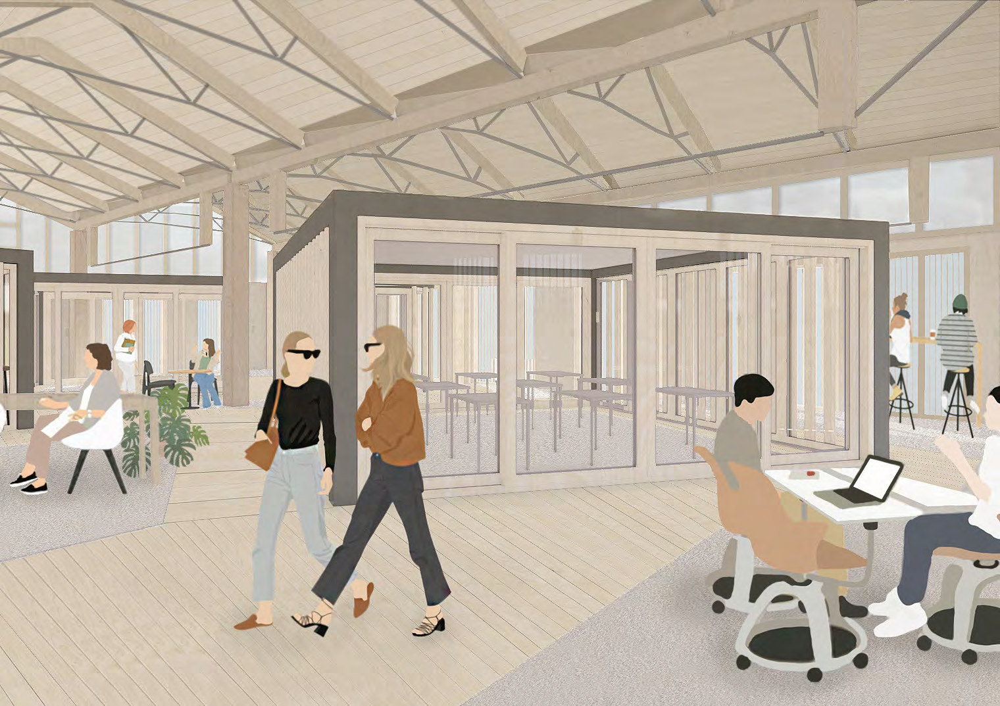
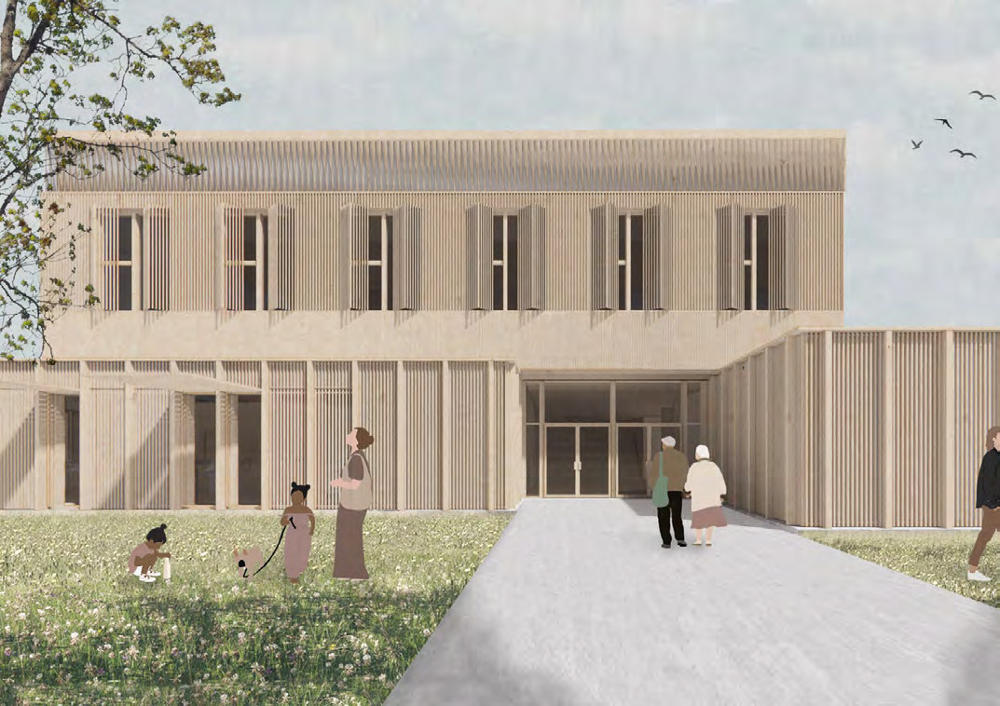
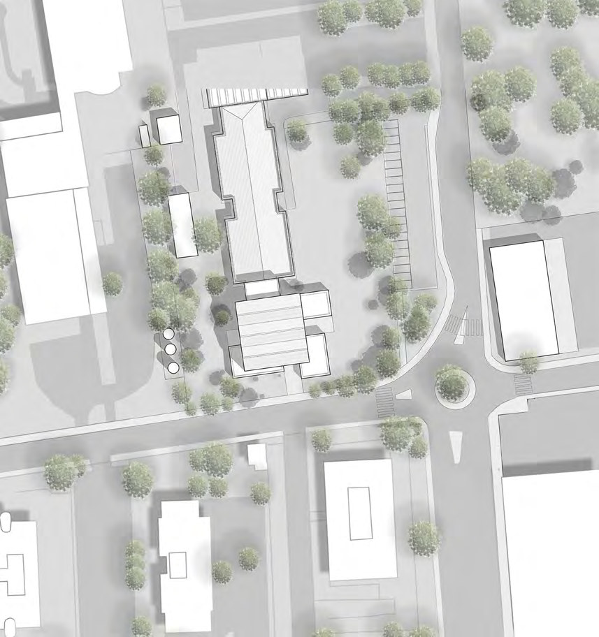
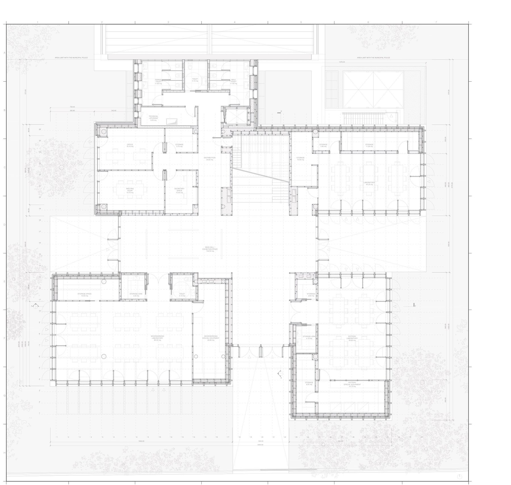
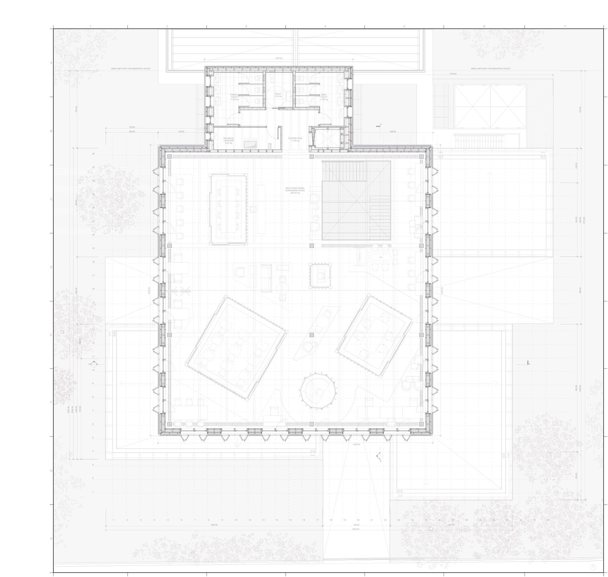
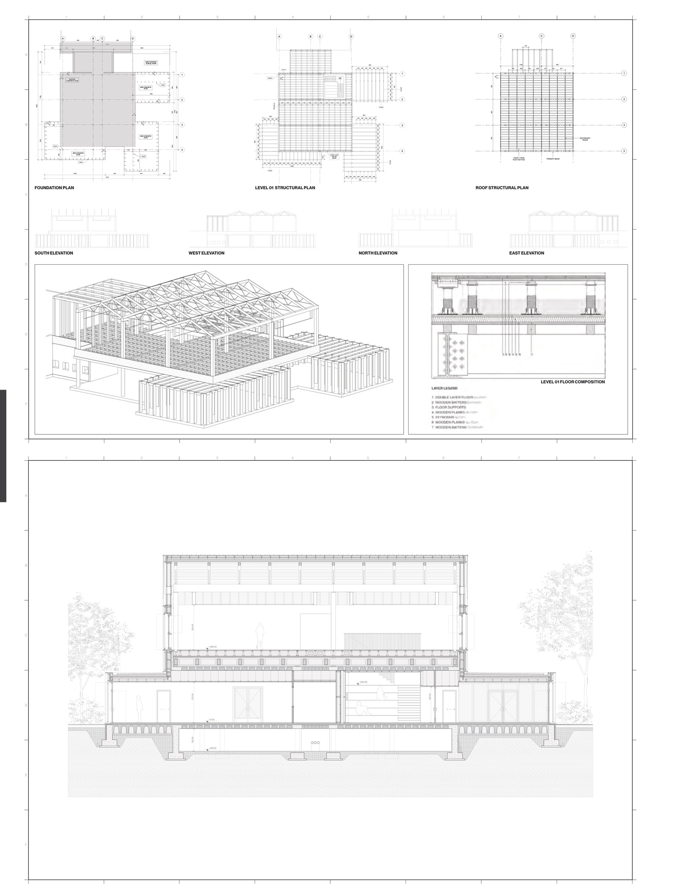
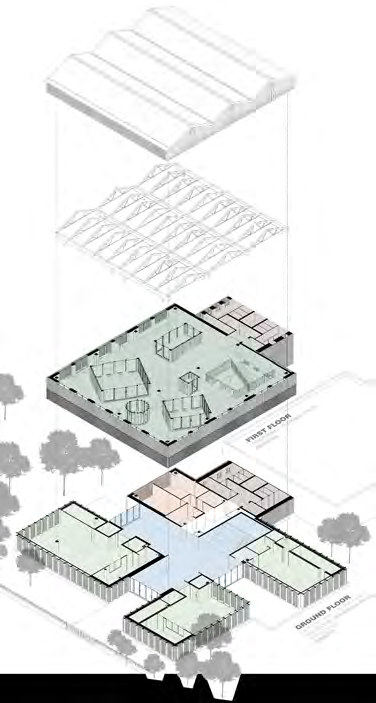

Cinifabrique

- Type
- Sustainable Construction Studio
- School
- Politecnico di Milano, 2023
- Professors
- Brunetti, Boffi, Scaioni
- Team
- Katherine Young, Umberto Dal Barco, Elia Villotta
- Programme
- Laboratories, after-school activities, coworking
Keep the structure, add only what is needed, and protect the green space around it.
The proposal extends an existing building while keeping its structure, adding volumes for after-school activities, laboratories and administration. Extensions on the ground floor are kept small to limit land use and preserve the large green area around the building.
Spaces
Pottery and woodworking laboratories, each with its own service spaces, form a new shared centre on the ground floor. Upstairs, a large multifunctional space uses integrated and mobile furniture so rooms can be divided as needs change.





